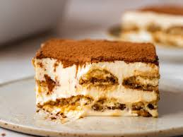

Home
Tiramisu

Description
Tiramisu is a classic Italian dessert made with layers of coffee-soaked ladyfingers, rich mascarpone cream, and a dusting of cocoa powder. It's a decadent and elegant treat that’s perfect for any occasion.
This no-bake dessert is easy to make and has a creamy, coffee-infused flavor that melts in your mouth. It’s a favorite among dessert lovers!
Ingredients
- For the Cream:
- 250g mascarpone cheese
- 200ml heavy cream
- 3 egg yolks
- 100g granulated sugar
- 1 tsp vanilla extract
- For Assembly:
- 200ml brewed espresso (cooled)
- 2 tbsp coffee liqueur (optional)
- 24 ladyfinger biscuits
- Unsweetened cocoa powder (for dusting)
- Dark chocolate shavings (optional, for garnish)
Step-by-Step Guide
- Prepare the Cream:
- In a mixing bowl, whisk the egg yolks and sugar until pale and creamy.
- Add the mascarpone cheese and vanilla extract, then mix until smooth.
- In a separate bowl, whip the heavy cream until stiff peaks form.
- Gently fold the whipped cream into the mascarpone mixture until well combined.
- Prepare the Coffee Mixture:
- Brew a strong espresso and allow it to cool.
- Optionally, mix in the coffee liqueur for extra flavor.
- Assemble the Tiramisu:
- Quickly dip each ladyfinger into the coffee mixture and place them in a single layer in a serving dish.
- Spread half of the mascarpone cream over the ladyfingers.
- Repeat with another layer of coffee-dipped ladyfingers and the remaining cream.
- Finish and Chill:
- Dust the top with unsweetened cocoa powder.
- Optionally, sprinkle dark chocolate shavings for garnish.
- Cover and refrigerate for at least 4 hours (or overnight) for the best flavor.
- Serve and Enjoy:
- Slice and serve chilled. Enjoy your homemade tiramisu!